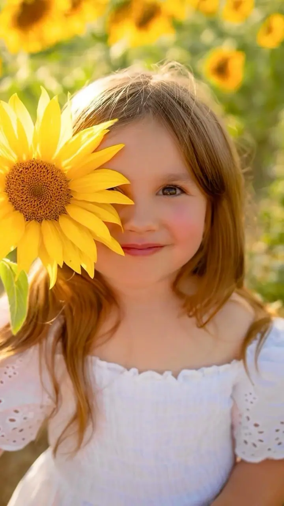
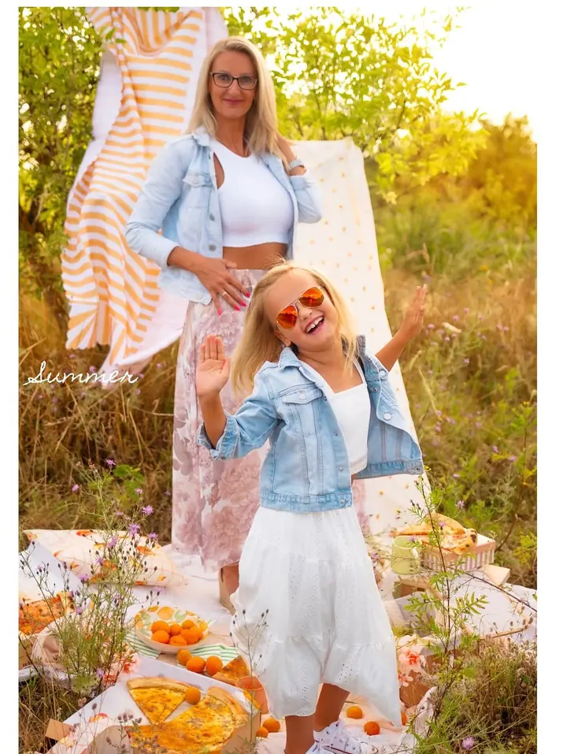
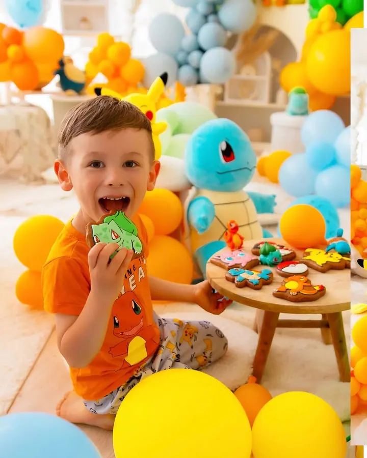

jedna
Rodinné a dětské focení
Fotím rodiny a děti v ateliéru i venku. Během roku připravuji tematické scény, třeba letní piknik nebo vánoční focení.


Jmenuji se Renata a pod značkou Mama foto fotím v Plzni miminka, děti, celé rodiny i maminky, které čekají miminko. Fotím ve svém ateliéru i venku, podle toho, co je vám bližší.
Více o mně
Co fotím
jedna
Fotím rodiny a děti v ateliéru i venku. Během roku připravuji tematické scény, třeba letní piknik nebo vánoční focení.
dvě
Fotky z doby, kdy čekáte miminko. Klidně i se staršími sourozenci, kteří se na miminko těší s vámi.
tři
Fotím i svatby. Přípravy nevěsty, obřad a radost celé rodiny.
Newborn focení patří k tomu, čemu se věnuji nejvíc. Miminko fotím v klidu a v teple ateliéru, s dekoracemi připravenými předem.
Děti si hrají, já fotím
Za objektivem
Jsem fotografka z Plzně a nejčastěji u mě najdete rodiny, děti, miminka a těhotné maminky. Fotím taky svatby, ale doma jsem hlavně u rodinného focení.
Fotím v ateliéru i venku. V ateliéru během roku připravuji tematické scény, od barevných dětských koutků přes letní piknik až po vánoční focení, na které si můžete rezervovat termín předem. Mám tu i šatnu, takže nemusíte řešit, co si vezmete na sebe.
Na focení nechci nikoho strojeně aranžovat. Děti si mají hrát a vy si máte užít chvíli spolu. Já u toho fotím.
Renata
Napište mi, o jaké focení máte zájem. Na sezónní focení, třeba vánoční, se rezervujete online.
Vybereme ateliér, nebo místo venku. Oblečení můžete vybrat i z mé šatny.
Fotíme v klidu a bez spěchu. Dětem nechám čas se rozkoukat a hrát si.
Z focení vyberete fotky, které vám udělají radost. Upravím je a pošlu vám je.
Portfolio
Otázky
Obojí. Ateliér je v Plzni, venkovní místo můžeme vybrat společně podle ročního období.
V ateliéru mám šatnu, ze které si můžete vybrat. Rádi vám poradím i s vlastním oblečením.
Newborn se obvykle fotí v prvních týdnech po porodu. Ozvěte se ideálně už v těhotenství a termín doladíme po narození.
Vánoční focení si rezervujete online přes odkaz, který najdete na mém Instagramu. Termíny se rychle plní, proto doporučuji neotálet.
Napište pár vět o tom, co si představujete. renata@jancoatelier.cz